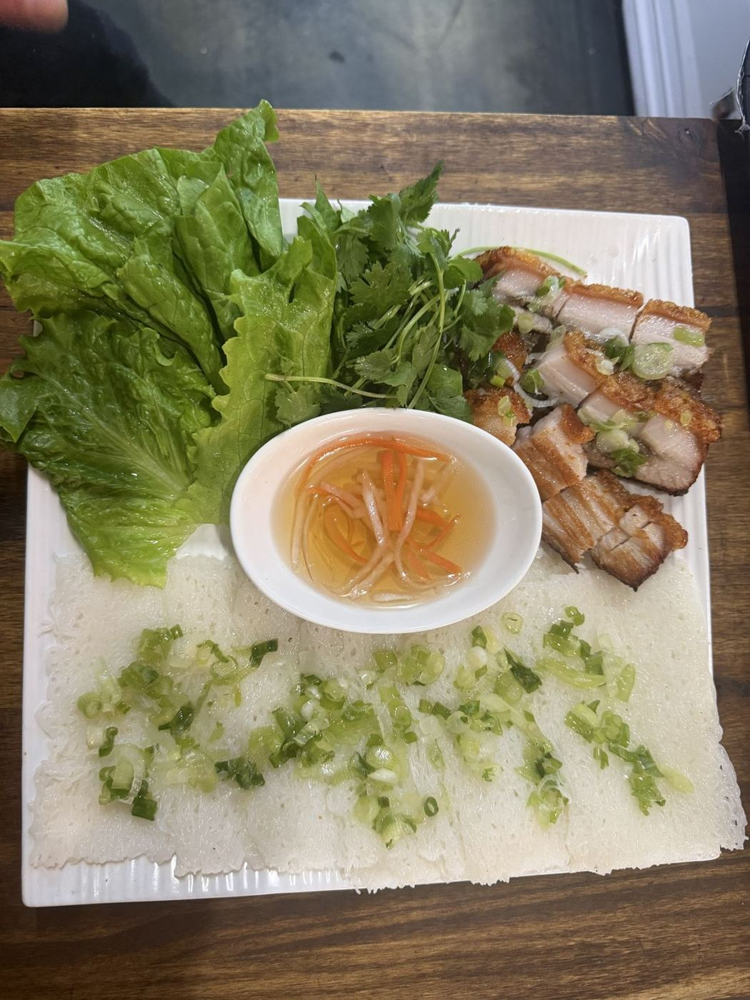
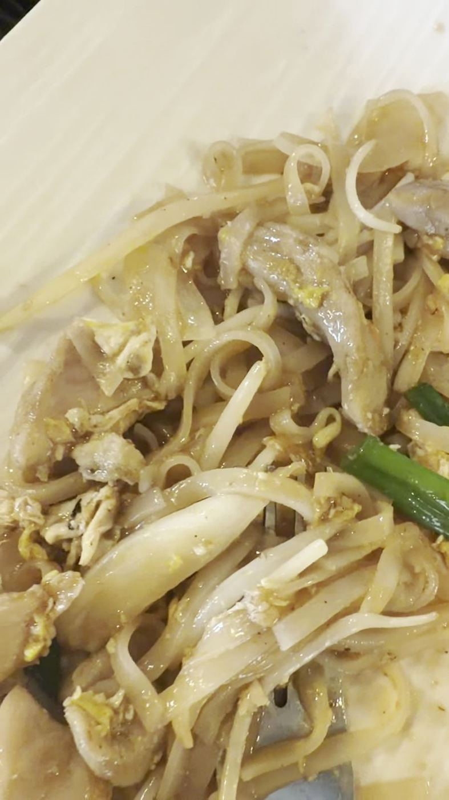
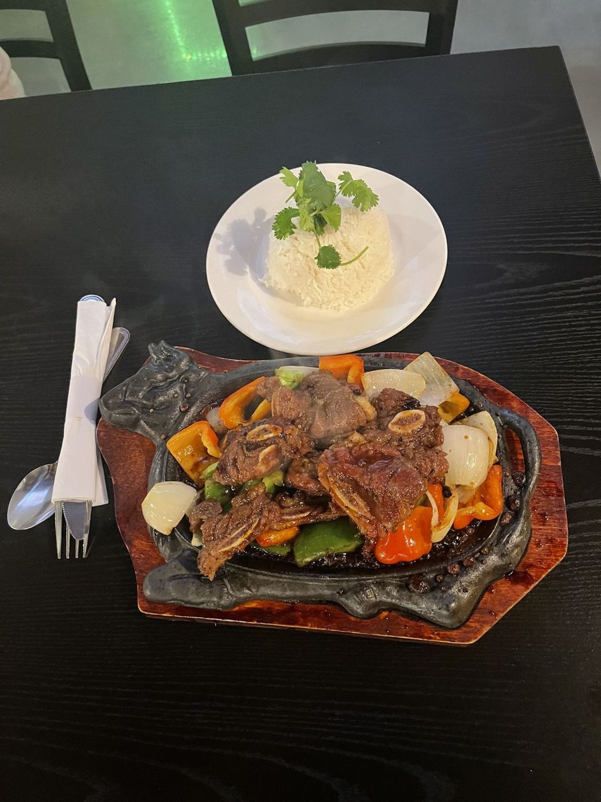
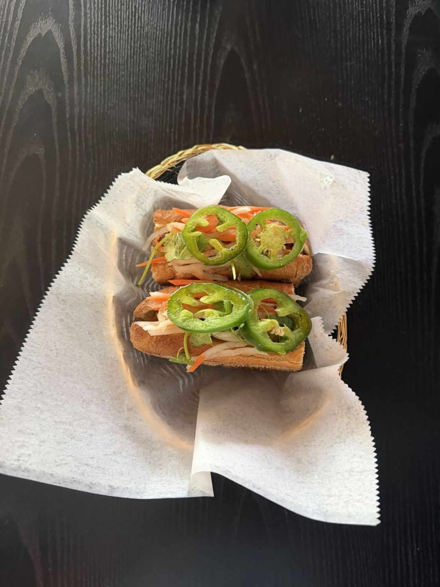
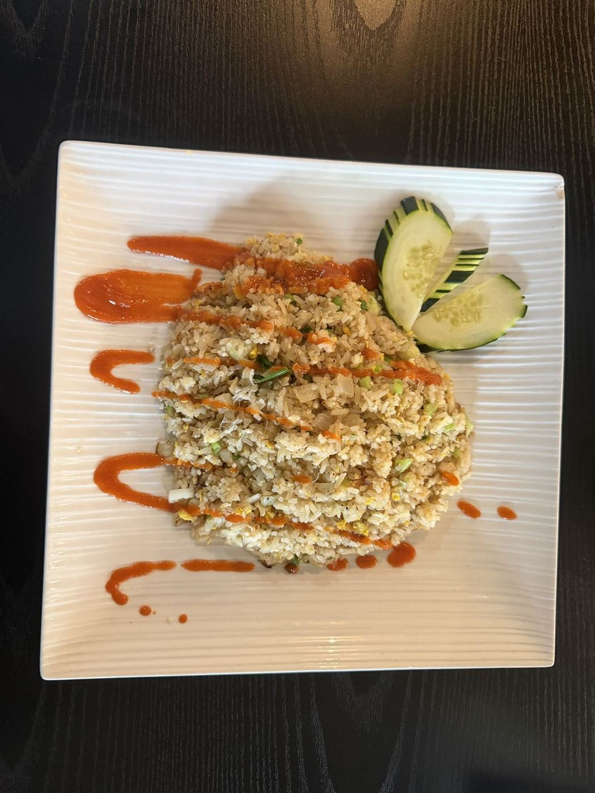

Iowa Pho
Flavorful pho, crispy spring rolls and in-house jasmine tea in a colorful, spotless dining room.
The menu(319) 261-8888Vietnamese kitchen · Coralville, IAWhat guests order

- PhởHot and fresh, with a broth guests call very authentic.
- Beef brisket soup"So flavorful," says one guest.
- Spring rollsShrimp rolls with peanut sauce, and crispy fried rolls. Ask for lettuce.
- Jasmine teaAn in-house brew guests call some of the best they have had.
Photos




217 Google reviews4.5★
“I had the beef brisket soup shrimp spring rolls. The soup was so flavorful and the rolls tasted great with the peanut sauce.”
“I love the foods they are delicious 😋, love the place and atmosphere. I highly recommend this restaurant I am not a big fan of pho their pho 🍲 taste good 😋😋. My husband really loves the foods that he ordered too☺️”
“The food is quite good. I’ve tried pho in the U.S. before, but I find the pho in Iowa tastes better. The place is very clean, and the staff are fast and friendly. Everyone should give it a try.”
“The pho was amazingly hot and fresh, the broth was very authentic. The eggrolls were hot and crispy, ask for lettuce! The jasmine tea is an in-house brew and some of the best iv had!”
| Mon | Closed |
| Tue–Wed | 11 AM–8 PM |
| Thu–Sat | 11 AM–9 PM |
| Sun | 11 AM–8 PM |